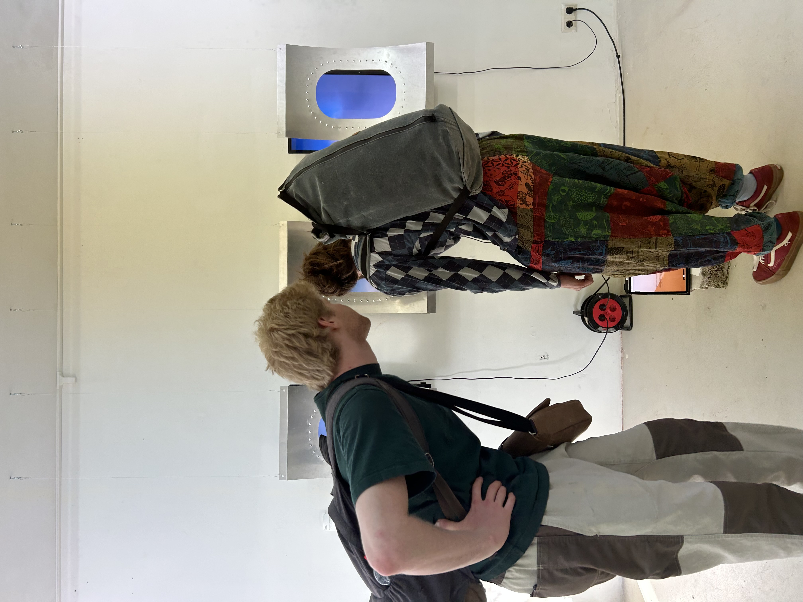
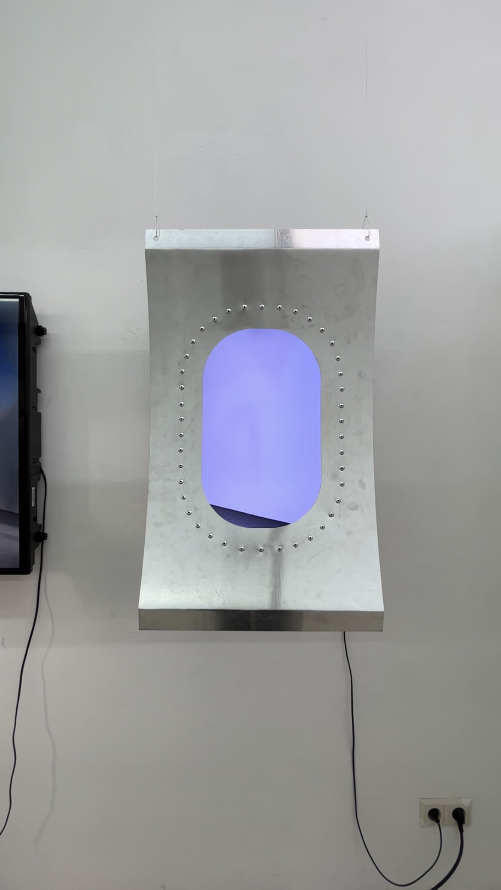
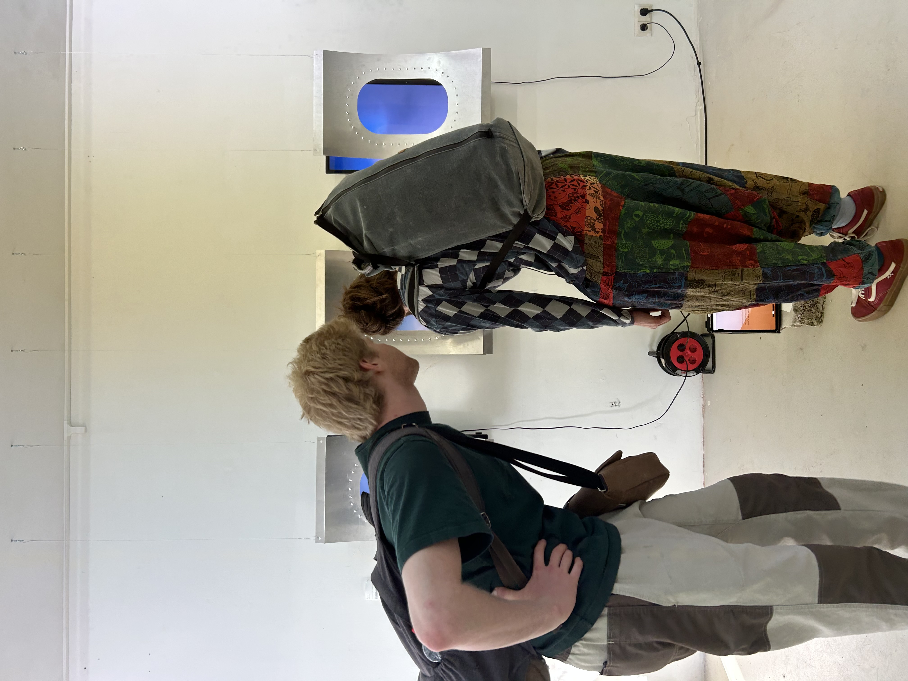
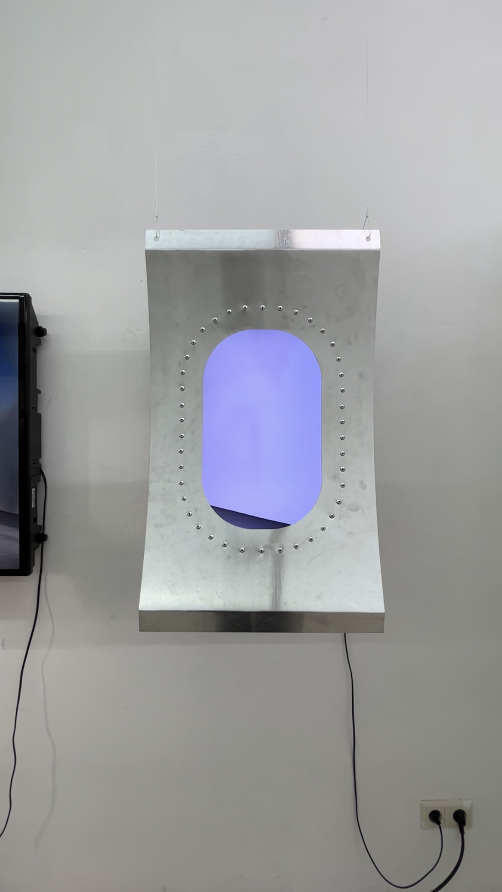

Though aviation is rooted in utilitarian function, its origins are deeply tied to a sense of curiosity
and desire to explore the unknown. Private jet culture, in all its luxury and absurd convenience, is an
limits. However illusory, the aesthetics of private aviation— and aviation broadly—possess an immersive,
mind-altering power. It evokes wonder and draws our attention to the present moment, offering a
psychological escape and emotional resonance that logic alone cannot explain.